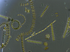

phytoplankton

Definition: Phytoplankton () are the autotrophic (self-feeding) components of the plankton community and a key part of ocean and freshwater ecosystems. The name comes from the Greek words φυτόν (phyton), meaning 'plant', and πλαγκτός (planktos), meaning 'wanderer' or 'drifter'.Phytoplankton obtain their energy through photosynthesis, as do trees and other plants on land. This means phytoplankton must have light from the sun, so they live in the well-lit surface layers (euphotic zone) of oceans and lakes. In comparison with terrestrial plants, phytoplankton are distributed over a larger surface area, are exposed to less seasonal variation and have markedly faster turnover rates than trees (days versus decades). As a result, phytoplankton respond rapidly on a global scale to climate variations.
Source: Wikipedia
Wikipedia Page
Wikidata Page